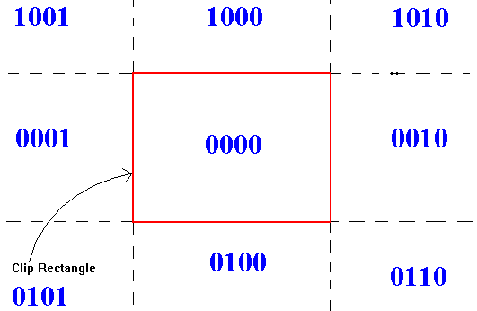
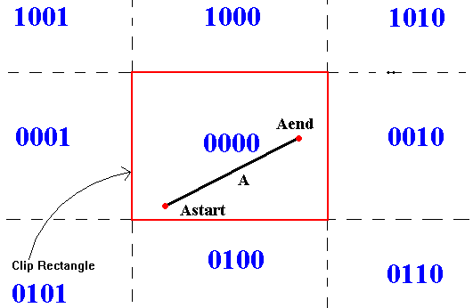
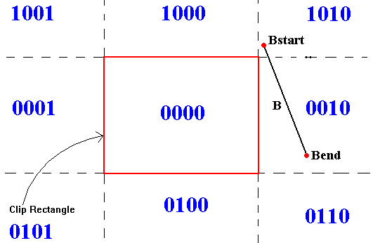
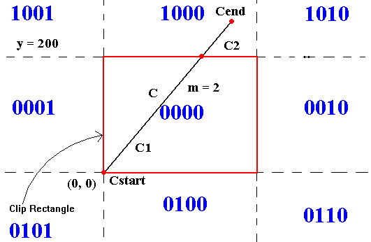

Description
Clipping is the removal of those parts of an object that fall outside the viewing region, which is like a window through which the user is viewing the scene. This viewing region is known as the clipping rectangle or world window. Many different algorithms exist to perform the clipping action on different types of shapes. One of the most well known and widely used algorithm for clipping lines is the Cohen-Sutherland Line-Clipping Algorithm. This tutorial will focus on this algorithm to give the reader a better understanding of the process of clipping a line.
Cohen-Sutherland Line-Clipping Algorithm
This algorithm clips a line to the clipping rectangle. It concerns its self with performing the simple cases quickly. The world can be thought of as being divided into nine regions: top-left, top-middle, top-right, center-left, center, center-right, bottom-left, bottom-middle, and bottom-right. The center would be the boundary for the drawing area. These nine regions can be identified with a unique 4-bit code, called an outcode. The outcode identifies the region based on its position relative to the window (red clipping rectangle in the picture below). In the example below, if the region is to the left of the window then the fist bit (least significant bit) is set to 1. If the region is to the right of the window, the second bit from the right is set to 1. The third bit from the right is set to 1 when the region is below the window. Finally, the fourth bit (most significant bit) is set to 1 when the region is above the window. See the picture below.

Given a line segment with endpoints P1 = (x0, y0) and P2 = (x1, y1), here are the basic steps:
- Determine the 4-bit code or outcode for each endpoint.
- 'OR' the bit codes together, if the result is 0000, then the line segment is trivially accepted and lies totally in the drawing area. If this is the case, draw the line and exit the algorithm.
- If the result was not 0000, then 'AND' the bit codes together, if the result is not all 0000, then the line segment is trivially rejected and lies totally outside of the drawing area. If this is the case, there is nothing to draw. Just exit the algorithm.
- If both cases failed, then the line may be partially visible and partially not visible. Compute the intersection of the line segment with the appropriate window edge. The appropriate window edge is determined by examining the bit codes. If the 1st bit from the right is 1, find the intersection of the line with the left boundary and so on. Suppose P is the intersection point.
- This determines two line segments, one from P1 to P and one from P to P2. One of these line segments is outside the window and the other one is inside the window. Select the line segment inside the window and rename the end-points P1 and P2.
- Repeat the algorithm until either the line segment remaining is trivially accepted or rejected.
Example A

Step 1:
Looking at line A. Its endpoint outcodes are outcode (Astart) = 0000 and outcode(Aend) = 0000.
Step 2:
'OR' the bits of the outcodes
0000 'OR' 0000 = 0000 -> Result is zero, thus trivial acceptance (the line lies completely within the window). Draw the line and exit the algorithm.
Example B

Step 1:
Looking at line B. Its endpoint outcodes are outcode(Bstart) = 1010 and outcode( Bend) = 0010.
Step 2:
'OR' the bits of the outcodes
1010 'OR' 0010 = 1010 -> Result not zero, thus continue on to step 3.
Step 3:
'AND' the bits of the outcodes
1010 'AND' 0010 = 0010 -> Result not zero, thus trivial reject (the line lies completely outside the window). Exit the algorithm.
Example C:

Step 1:
Looking at line C. Its endpoint outcodes are outcode(Cstart) = 0000 and outcode(Cend) = 1000.
Step 2:
'OR' the bits of the outcodes
0000 'OR' 1000 = 1000 -> Result not zero, thus continue on to step 3.
Step 3:
'AND' the bits of the outcodes
0000 'AND' 1000 = 0000 -> Result is zero, thus continue on to step 4.
Step 4:
Calculate the intersection of the line with the window. Since the line lies in region 1000, calculate the point of intersection with the upper boundary of the window (y = 200).
Use Point Slope formula: y - y1 = m(x - x1). Suppose the slope of line C is 2. Obviously, Cstart = (0, 0). Plugging in these into the point-slope formula, we get
y - 0 = 2(x - 0)
y = 2x
Intersecting this with the upper window boundary, we know y = 200 so we must find x:
200 = 2x
x = 200 / 2 = 100
Thus the line intercepts the window at the point (100, 200). Repeat steps for the new line segments. The line segment C2 from (100, 200) to Cend is outside the window so we can throw that portion of the segment away. The new line segment that must be sent back through the algorithm is the line segment C1 from (0,0) to (100, 200).
Segment C1
Step 1:
Determine the outcodes. Outcode of (0, 0) is 0000 and outcode of (100, 200) is also 0000.
Step 2:
'OR' the bits of the outcodes
0000 'OR' 0000 = 0000 -> Result is zero, so trivially accept the line, draw the line in the window, and exit the algorithm.